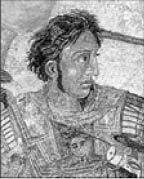
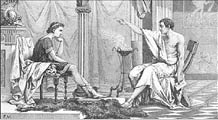
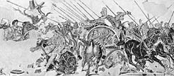

Büyük iskender
Büyük İskender (MÖ 356-323)
İskender MÖ 356 yılında Makedonya’nın başkenti Pella’da doğdu. Babası Kral Philip öldürülünce yirmi yaşında tahtı devraldı.
On iki yaşından itibaren Aristo’dan ders almaya başlaması ve on altı yaşında babası Roma Seferi’ne çıktığında ülke yönetimini üstlenmesi, yetişmesinde
önemli rol oynadı.Amacı tüm dünyayı ele geçirmek olan İskender, otuz üç yaşında ölmesine rağmen on iki yıl sekiz ay süren hükümdarlık döneminde Pers İmparatorluğu’nu yıkarak Yunanistan’dan Hindistan’a kadar uzanan büyük bir imparatorluk kurdu.

Büyük iskender Aristo’nun derslerini dinlerken
Bir efsaneye göre “Gordion düğümü”nü çözen hükümdar Asya’ya hâkim olacaktır. Midas’ın babası Frigya kralı Gordius’a ait olduğu söylenen ünlü Gordion düğümü, bir kağnıyı bir sütuna bağlayan karışık sarmaşıklar yığınıdır. Büyük İskender MÖ 334’te Gordion’a geldiğinde efsaneyi duyar ve bir kılıç darbesiyle düğümü ikiye ayırır.
Büyük İskender İran’a sefer hazırlığı içindeydi. Bu arada istihbarat kaynakları da hızlı bir şekilde çalışıyordu. En son gelen haberler anında Büyük İskender’e iletiliyordu.
Bu haberlere göre, İran Hükümdarı Dara, büyük bir orduyla bu sefere karşı koymaya hazırlanıyordu.
Yakınlarının vazgeçirme çabalarına Büyük İskender’in cevabı şöyleydi:
“Bir sürünün üzerine atılacak kurt, onun adedini asla düşünmez!”
Büyük İskender bir savaş sonrası meydanda yatan ölüler arasında dolaşmaktaydı. Ortalık tam anlamıyla kan gölüne dönmüştü.
Bu geniş alana bakıp, kendini de sorguya çekercesine yanında bulunan hocasına sordu:
“Aristo, bunun anlamı nedir?”
Aristo bu soruyu şu kısa cümleyle yanıtladı:
“Zafer ya da hiç!”
Büyük İskender’in yanına gelen bir fakir, ondan bir şey alamayınca ısrar eder:
“Az bir şey olsun ihsan etmez misiniz?”
“Az şey vermek bana layık değildir.”
“O hâlde çok ihsan ediniz.”
“O da sana layık değildir.”
Büyük İskender planlarını değişen koşullara göre kolayca uyarlayabilme yeteneğine sahipti. Karşısına çıkan fırsatları iyi değerlendiriyor ve ordusuyla birlikte dönemin koşullarına göre çok hızlı hareket edebiliyordu. Farklı ülkelerin askerlerini kısa sürede kendi sistemine uygun hâle getiriyordu.
Göze çarpan özellikleri, büyük düşünme, değişme esnekliği, hız, cesaret ve sistemli hareket etmenin yanı sıra bilgiye verdiği önemdir.
Pers hükümdarı III. Dareios’u Pinaros Çayı kıyısında yenen Büyük İskender, Suriye ve Fenike’ye doğru ilerler. Büyük İskender, bu büyük yenilgi üzerine Pers hükümdarının önemli tavizler ve topraklar verdiği barış teklifini reddeder. Pers İmparatorluğu’nun bir ada kenti olan Tyros’un uzun süre alınamaması üzerine İskenderun şehri komutanı Parmenion’un, daha önceki barış teklifi için:
“İskender’in yerinde olsaydım kabul ederdim” demesi üzerine, amacı Asya’nın tamamını ele geçirmek olan Büyük İskender şu cevabı verir:
“Parmenion olsaydım, ben de kabul ederdim.”

Büyük iskender’in III. Dareios’u yendiği issus Savaşı’nı (MÖ 333) anlatan bir mozaik
MÖ 325 yılında yeni bir sefer hazırlığındayken Babil kentinde hastalanarak ölür. Vasiyetinde ülkenin yönetimini en güçlü olana bıraktığını açıklaması ise uzun süren çatışmalara yol açmıştır.